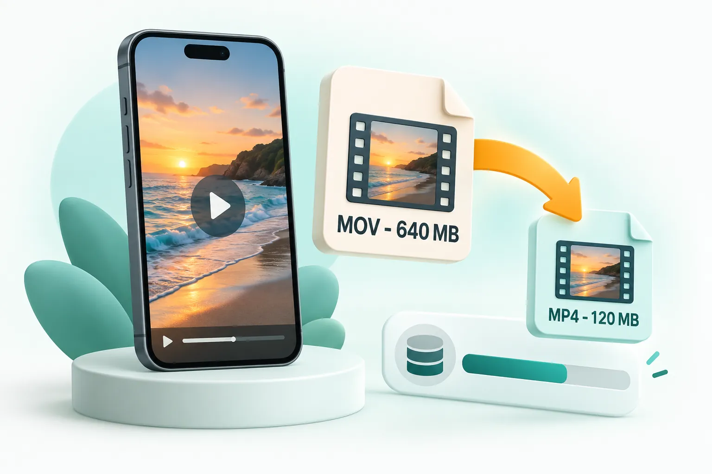

Blog / iPhone
How to reduce iPhone video size without installing an app.

Open a browser-based video compressor on your iPhone or computer, add the MOV video, choose a size or the "Smaller file, same look" option, and save the MP4 it creates. To make future videos smaller, go to Settings > Camera > Record Video and choose 1080p at 30 fps instead of 4K.
Why iPhone videos take up so much space
iPhones record in high quality by default. The estimates shown in the iPhone's own Record Video settings put a minute of 1080p at 30 fps at roughly 60 MB, while a minute of 4K at 60 fps is around 400 MB. Cinematic mode, slow motion and HDR add even more. A few holiday clips can easily fill several gigabytes.
| Recording setting | Approximate size per minute (High Efficiency) |
|---|---|
| 720p HD at 30 fps | About 40 MB |
| 1080p HD at 30 fps | About 60 MB |
| 1080p HD at 60 fps | About 90 MB |
| 4K at 30 fps | About 190 MB |
| 4K at 60 fps | About 400 MB |
Why iPhone videos sometimes will not play on Windows
By default, iPhones save video as HEVC (H.265) inside a .MOV file, which Apple calls High Efficiency. It saves space, but many Windows PCs, older Android phones, smart TVs and websites cannot play HEVC without extra codecs. Converting to MP4 with H.264 fixes that: it plays almost everywhere.
Reduce iPhone video size in your browser
- On your iPhone, open Safari and go to the CompressPixel video compressor. You can also do this on a computer after copying the video across.
- Tap Choose videos and pick the clip from your Photos library.
- Pick a preset: Smaller file, same look for general use, or WhatsApp, Gmail or a custom size if you need to hit a limit.
- Tap Compress videos. The video is processed on the phone itself; nothing is uploaded.
- Tap Share to send it straight to an app, or Download and choose Save Video to keep it in Photos.
The result is an MP4 file that plays on Windows, Android and every browser, typically 50 to 80 percent smaller than the original MOV.
Change your iPhone camera settings to save space
- Lower the default resolution. Go to Settings > Camera > Record Video and choose 1080p HD at 30 fps for everyday clips. Switch to 4K only when you need it.
- Keep High Efficiency on. Settings > Camera > Formats > High Efficiency saves around half the space compared with Most Compatible. Convert individual clips when you need to share them.
- Turn off Enhanced Stabilisation or HDR if you do not need them; they can add to file size on some models.
- Trim before you share. In Photos, tap Edit and drag the ends of the timeline to cut unwanted seconds.
Free up storage without losing your videos
If storage is the problem rather than sharing, consider keeping compressed copies of long clips you rarely watch, and moving originals to a computer or cloud backup. Compress a copy, check it looks fine, then decide whether to keep the original.
Frequently asked questions
How do I make an iPhone video smaller for free?
Use a browser-based compressor such as CompressPixel in Safari. Add the video, choose a preset and save the smaller MP4. No app or account is needed.
Why is my iPhone video a MOV file?
iPhones save video in Apple's MOV container, usually with the HEVC codec. Converting to MP4 with H.264 makes it play on Windows, Android and most websites.
What iPhone video setting uses the least space?
720p or 1080p at 30 fps with High Efficiency (HEVC) enabled. 4K at 60 fps uses roughly six to seven times more space per minute.